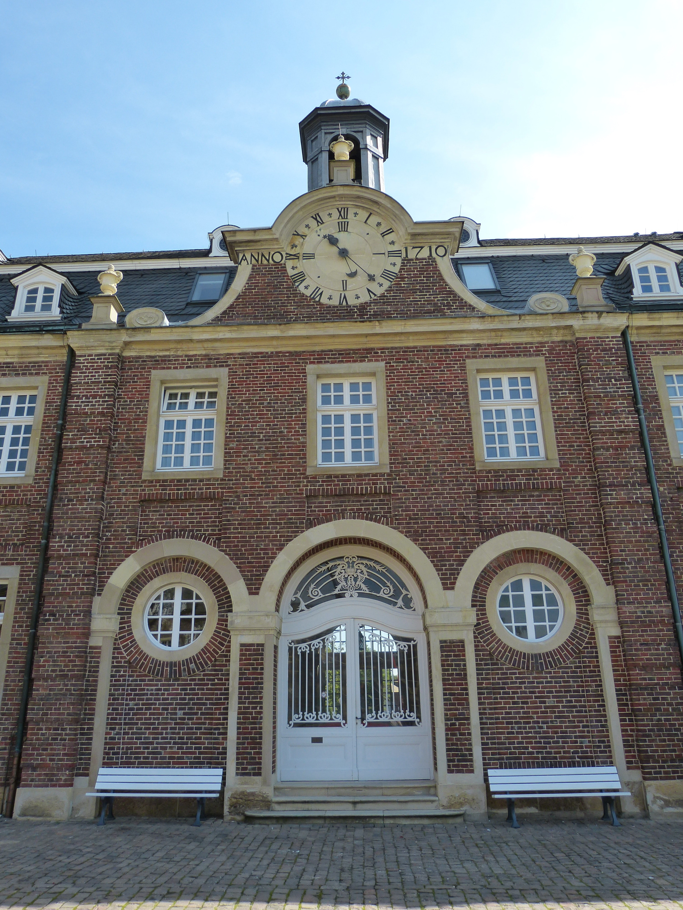

Apesar da tradição, os alemães não são o povo que mais bebe cerveja no mundo. Eles perdem para a República Tcheca, onde cada pessoa consome por ano cerca de 157 litros de cerveja! Os alemães estão apenas em terceiro lugar, com “míseros” 115.8 litros por pessoa por ano. Apesar da fama, os alemães não bebem tanto assim, exceto na Oktoberfest, quando eles viram cerca de 6 milhões de litros de cerveja em duas semanas;E essa bebida é tão relevante que pode começar a ser consumida pelos jovens a partir de 16 anos. Assim como o vinho.
Quando o assunto é Alemanha, a gente tende a achar que conhece pelo menos um pouco a respeito do país. Seja pelas aulas de história ou pelos imigrantes que ocuparam o sul do Brasil, todo mundo sabe algo a respeito. Mas nós iremos mostrar 12 curiosidades da Alemanha que vão te provar que você não sabe tanto assim sobre a terra da cerveja.
A Alemanha não é o país que consome mais cerveja
⇡

Há mais de 1.000 salsichas diferentes na Alemanha!
Entre as mais de 1.000 opções, a mais famosa é a currywurst. Para você ter uma ideia, o povo alemão consome mais de 800 milhões de currywurst por ano, sendo 70 milhões apenas em Berlim, onde há até um museu dedicado à iguaria. Mas não é só ela que chama atenção. Todas são aromatizadas com diferentes especiarias que as tornam saborosas. Obviamente, é quase impossível provar todas elas durante a sua viagem, mas pelo menos uma não pode faltar.
⇡
É o país com mais atividades e lugares culturais do mundo!
8.800 bibliotecas, 7.000 festivais, 6.834 museus, 820 teatros e 130 orquestras profissionais, esse é um número que surpreende em relação à cultura da Alemanha. Esses espaços culturais, além de galerias de arte, estão espalhados por todo o país (não apenas nas grandes cidades) que abriga mais espaços culturais do que qualquer outro país do mundo..
⇡

Foi o primeiro país a adotar o horário de verão.
No auge da Primeira Guerra Mundial, em 1916, a Alemanha tornou-se o primeiro país a adotar de fato o horário de verão. A tendência se espalhou rapidamente por toda a Europa e em 1918 também foi aderida pelos Estados Unidos e diversos outros países do mundo, como o Brasil.
⇡
Alemanha inaugura primeiro trecho de estrada para ciclistas em 2016.
Uma ciclovia em forma de estrada com 100 km de extensão. É este um projeto em execução na Alemanha, que teve seus cinco primeiros quilômetros inaugurados. Os idealizadores calculam que a via expressa para ciclistas deverá tirar das rodovias da região cerca de 50 mil automóveis por dia. A ciclovia tem quatro metros de largura, e quando completa vai ligar dez cidades da região de Ruhr, entre elas Duisburg, Bochum e Hamm, além de quatro universidades..
⇡
Berlin tem o primeiro supermercado 100% vegano do mundo!
A cidade de Berlim, na Alemanha, foi a primeira a abrir as portas para a empresa VEGANZ. Por lá, já existem duas lojas da Veganz abertas e uma terceira está sendo estudada até o fim do ano. Atento ao número cada vez maior de adeptos ao veganismo, o dono da rede, Jan Bredack, quer expandir o negócio mundo afora. Espanha, Inglaterra, Holanda, Itália, Suíça, Dinamarca e EUA já estão nos planos. .
⇡
.jpeg)
A Alemanha é líder em políticas climáticas e energéticas
Um fato interessante sobre a Alemanha é que, em 2011, o país afirmou que iria desativar até o fim de 2022 todas as usinas nucleares, onde era produzida cerca de 18% da eletricidade consumida. A ideia é substituí-las por energias renováveis. E o plano realmente está em andamento. Além de já ter desativado boa parte das usinas, recentemente o país atualizou sua política energética, colocando como meta que até 2030, 80% da eletricidade produzida venha de fontes renováveis..
⇡
O trânsito é mais organizado
Diferente do Brasil, as leis de trânsito da cultura da Alemanha são mais rígidas e não apenas os motoristas as levam a sério. Há uma super consciência coletiva e elas também são respeitadas por ciclistas e pedestres. Outro fator que mostra que por lá as coisas são mais organizadas é que apesar de 70% das rodovias não possuírem limite de velocidade, os números de acidentes são 11 vezes menores do que no Brasil, onde há limite..
⇡